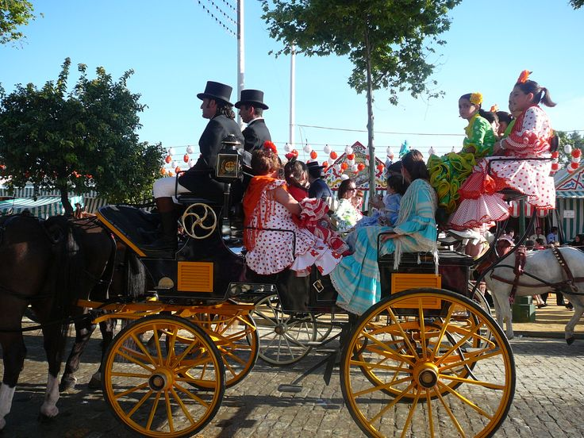
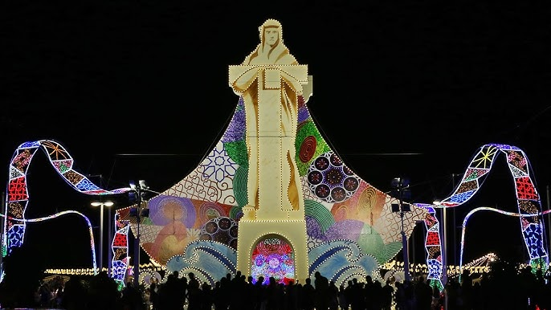

La Feria de Huelva tiene su origen en el siglo XIX, cuando la ciudad comenzó a celebrar una festividad popular que, con el paso del tiempo, se ha consolidado como una de las más importantes de la región. Esta feria, que se celebra cada año en el mes de agosto, tiene lugar en el emblemático recinto de la Avenida de las Ferias. En sus primeras ediciones, la celebración estuvo estrechamente vinculada a la festividad religiosa en honor a la Virgen de la Cinta, pero con los años, ha evolucionado hasta convertirse en un gran evento social y cultural. Las casetas, llenas de color, música y baile, se instalan por todo el recinto y se convierten en el corazón de la fiesta. En ellas se disfruta de la gastronomía local, destacando productos como el jamón ibérico y las famosas gambas de Huelva, acompañados del refrescante rebujito. Además, la feria ofrece una gran variedad de actividades ecuestres, conciertos y desfiles, lo que convierte este evento en un escaparate de la cultura onubense. Cada año, miles de personas visitan Huelva para vivir esta fiesta repleta de alegría, tradición y sabor.
Un plato imprescindible en la Feria de Huelva, famosas por su frescura y sabor único. Se disfrutan en cada caseta, acompañadas de un buen vino de la región.
La bebida refrescante por excelencia en la feria. Combinando manzanilla con soda, el rebujito es la bebida que acompaña las largas noches de fiesta.
Casetas de colores vibrantes que ofrecen música, baile y gastronomía. Son el alma de la feria, donde se viven momentos inolvidables con amigos y familiares.
El desfile ecuestre es uno de los momentos más esperados de la feria, con caballos engalanados y carruajes que recorren las calles, mostrando la tradición ecuestre de Huelva.
Las casetas de la feria están llenas de música flamenca y sevillanas, creando un ambiente alegre y festivo que invita al baile y la diversión.
La Feria de Huelva cobra vida al caer la noche, con luces brillantes y actividades que se extienden hasta altas horas de la madrugada, dando lugar a un ambiente mágico.
|  |
La Feria de Huelva es una fiesta que combina las tradiciones andaluzas, la música flamenca y la gastronomía local. Uno de los momentos más destacados es el desfile ecuestre, donde caballos y jinetes lucen sus mejores galas ante miles de espectadores. Las casetas, que llenan el recinto ferial, son el centro de la celebración, con comida típica como el jamón ibérico y las gambas de Huelva, acompañadas de "rebujito". La música mantiene el ambiente festivo hasta altas horas de la madrugada, creando una experiencia única. Además, las casetas suelen ofrecer actividades y juegos para todos, lo que las convierte en el lugar perfecto para compartir con amigos y familiares. |
|
Además de los desfiles, la feria ofrece concursos de sevillanas, espectáculos de flamenco y actividades para toda la familia. Las luces y colores inundan las calles, haciendo de la feria un evento vibrante que atrae a miles de personas cada año. La Feria de Huelva es sin duda uno de los eventos más esperados del verano andaluz. Cada año, se esperan grandes sorpresas y actuaciones que hacen que la feria sea aún más especial para los locales y visitantes. |
 |